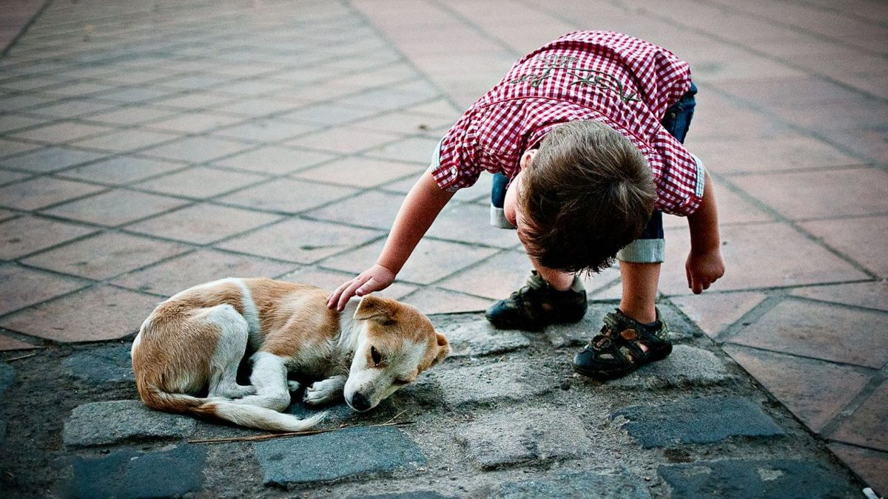

¿Por qué un zaguate?
Existen muchas razones para querer una mascota en casa, entre ellas debemos destacar que los perros son un compañero fiel que estará a tu lado siempre, te entregará muchas alegrías y sobre todo un amor indescriptible. Si tienes niños pequeños, crecerán juntos y crearán una amistad fiel e indestructible.
Al adoptar un perrito callejero serás parte de un gran cambio. En muchos casos los perritos han pasado por situación de abandono o maltrato, por lo que al adoptarlo verás cómo pasan de un estado vulnerable física y psicológicamente a ser un perro feliz, cariñoso y sociable que solo te entregará amor. Además tienen la capacidad de entender el cambio que están viviendo, por lo que al adoptar verás cómo ese perrito se convertirá en un compañero fiel y leal que agradecerá todos los días estar a tu lado con su amor incondicional.
Por otra parte, aportarás con tu granito de arena para que menos perros estén en la calle, siendo una experiencia totalmente gratificante. Vivir todo el proceso de la adopción te hará ver que esta experiencia es única y que sin duda estas tomando la mejor decisión. Los criaderos de perros en muchos casos y de acuerdo con lo expresado por ASPCA (una asociación en contra los criaderos de animales), “Estas fábricas de perros hacen que se crucen con distintas razas y le van dando prioridades a ciertos rasgos físicos, para hacerlos a su medida. El resultado son generaciones de perros con defectos genéticos”.
Otro de los beneficios de adoptar, es que puedes elegir la edad de tu nuevo compañero, por ejemplo, si tienes niños pequeños, una buena opción es adoptar un cachorro para que crezcan juntos, pero si quieres un perro más tranquilo, lo ideal es un perro adulto. Independiente de la edad, la mayoría de ellos son sumamente sociables debido a mientras Vivian en la calle o en un canil, convivieron con otros animales.En resumen, adoptar es darle a un perrito una nueva oportunidad de vida y por qué no, una nueva oportunidad para que la tuya también cambie, ya que vivirás una nueva experiencia que solo tendrá cosas positivas por delante.
